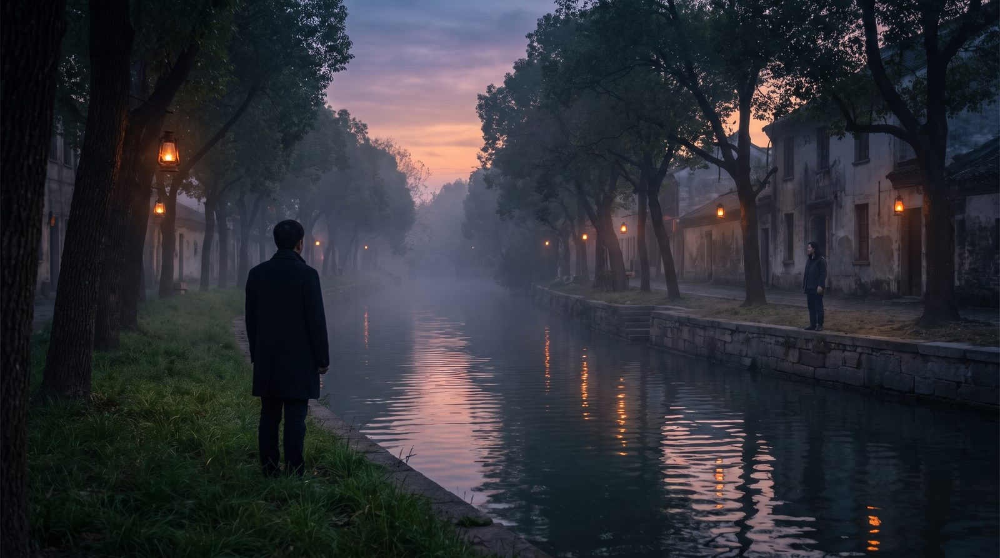

เห็นSeeing
ศาสนาศาสตร์ · ศาสตร์ที่ ๓ ใน ๔ ศาสตร์ที่ลุงหงอกใช้ในเวลาเดียวกันReligious science · science 3 of the four that Uncle Ngok uses at the same time
เริ่มอ่านStart readingผู้คนทั่วไปฝึกปฏิบัติธรรมโดยเข้าใจว่าธรรมะคือธรรมชาติ และได้ฝึกปฏิบัติกันมายาวนานถึง 2,600 ปี ทว่าผู้ที่ฝึกแล้วจะบังเกิดผลได้นั้น จำเป็นต้อง “เข้าถึง” พระธรรมPeople practise the Dhamma, training in the understanding that Dhamma is nature, and have done so for 2,600 years. Yet for that practice to bear fruit, one must reach the Dhamma.
พระธรรมนั้นซ่อนซ้อนอยู่ในธรรมชาติ ทั้งในดิน ในน้ำ ในลมหรืออากาศ และในไฟหรือความร้อน ในดินหรือของแข็งมีนิวเคลียส ซึ่งพลังงานบริสุทธิ์อยู่ตรงกลางระหว่างโปรตอนและนิวตรอน ในน้ำก็มีนิวเคลียสที่มีพลังงานบริสุทธิ์อยู่ตรงกลางระหว่างโปรตอนและนิวตรอนเช่นกัน ในอากาศ พลังงานบริสุทธิ์ซ่อนซ้อนอยู่ในนิวเคลียสของอากาศ และในความร้อน พลังงานบริสุทธิ์ก็อยู่ตรงกลางนิวเคลียสของความร้อนเช่นเดียวกัน พลังงานบริสุทธิ์ที่ซ่อนซ้อนอยู่ในลมหรืออากาศนี้ บางคนเรียกว่า “อีเทอร์”The Dhamma lies hidden, layered within nature — in earth, in water, in wind or air, and in fire or heat. Earth, or solids, has nuclei, and pure energy lies at the centre between the protons and neutrons; water too has nuclei with pure energy at the centre between protons and neutrons. In the air, pure energy lies hidden within the nuclei of the air, and in heat, pure energy likewise lies at the centre of the nuclei of heat. The pure energy hidden in the wind, or air, is what some call the ether.
ลุงหงอกได้กล่าวไว้ว่าUncle Ngok has said ต้องเป็นผู้ที่ “เข้าถึง” เท่านั้นจึงจะได้ผล และได้ยกพุทธพจน์ไว้ว่าonly one who reaches it will succeed, and he cites the Buddha’s words:
“ผู้ใดเห็นธรรม
ผู้นั้นเห็นเราตถาคต”“Whoever sees the Dhamma
sees me, the Tathāgata.”
หมายความว่า ผู้ใดเห็นธรรมชาติ ผู้นั้นย่อมเห็นพระพุทธเจ้า ธรรมชาติประกอบด้วยของแข็ง ของเหลว และอากาศ ดังนั้น ผู้ใดก็ตามที่มองเห็นอากาศ ผู้นั้นย่อมมองเห็นพระพุทธเจ้าThat is: whoever sees nature sees the Buddha. Nature is made of solids, liquids and air — so whoever can see the air sees the Buddha.

ส่วนคำว่า “เข้าถึง” นั้น ผู้ใดเข้าถึงพระธรรมที่ซ่อนซ้อนอยู่ในอากาศ ซึ่งก็คือพลังงานบริสุทธิ์ ผู้นั้นจะได้สัมผัสถึงตัวตน และเข้าถึงพระพุทธเจ้าอย่างแท้จริง คำว่า “เห็น” กับคำว่า “เข้าถึง” จึงแตกต่างกันAs for reaching: whoever reaches the Dhamma hidden in the air — which is pure energy — will touch its very presence and truly reach the Buddha. Seeing and reaching are therefore not the same.
หากมีคลองสายหนึ่งกั้นอยู่ ผู้ที่ “เห็น” คือผู้ที่มองเห็นคนซึ่งอยู่ฝั่งตรงข้าม ส่วนผู้ที่ “เข้าถึง” คือผู้ที่กระโดดข้ามไปยังอีกฝั่งหนึ่งได้จริง และสามารถโอบกอดพระพุทธเจ้า เป็นอันหนึ่งอันเดียวกับพระพุทธเจ้าได้ นั่นคือ “การเข้าถึง”where a canal lies between two banks, one who sees sees the person standing on the far side; one who reaches actually leaps across to the other bank, and can embrace the Buddha, becoming one with the Buddha. That is reaching.
ดุจการข้ามฝั่งข้ามห้วย หรือดุจการเกาะพระไตรปิฎกไว้ เมื่อข้ามไปถึงอีกฝั่งหนึ่งแล้ว จึงสามารถละและวางพระไตรปิฎกได้ เพราะพระไตรปิฎกคือรูป และรูปคือสสาร เมื่อจิตบริสุทธิ์แล้ว จึงละเลยคำว่ารูปไปแล้ว จิตบริสุทธิ์จะไปถึงคำว่านาม การละวางพระไตรปิฎกจึงเปรียบเสมือนการทิ้งรูปนั่นเองIt is like crossing a river or a stream, holding on to the Tipiṭaka: once across on the far bank, one can let the Tipiṭaka go and lay it down. For the Tipiṭaka is form, and form is matter. When the mind is pure it has passed beyond form, and the pure mind arrives at name (nāma). Laying down the Tipiṭaka is therefore like leaving form behind.
พระธรรมเป็นศาสตร์ที่พระพุทธเจ้าทรงประทานไว้แก่ชาวโลก การเข้าถึงพระธรรมมีหลายระดับ คิดเป็นเปอร์เซ็นต์ตามขั้นของพระอริยบุคคล ธรรมจักรจะค่อย ๆ เติมเต็มทีละส่วน และแต่ละขั้นเชื่อมโยงกับระดับของจิต หรือฌาน ในจิตศาสตร์The Dhamma is the science the Buddha gave to the world. Reaching it has levels, counted in percent by the stages of the noble ones: the Dhamma wheel fills part by part, and each stage is linked to a level of mind — a jhāna — in Mind Science.
เข้าถึงพระธรรม 25%reaches 25% of the Dhamma
บรรลุธาตุดินattains the earth element
มีองค์ประกอบ 5 อย่าง คือ วิตก (ตรึก) วิจาร (ตรอง) ปีติ (อิ่มใจ) สุข (สบายใจ) และเอกัคคตา (มีอารมณ์เป็นหนึ่ง)Five factors: applied thought, sustained thought, rapture, happiness and one-pointedness.
เข้าถึงพระธรรม 50%reaches 50% of the Dhamma
บรรลุธาตุน้ำattains the water element
ละวิตกและวิจารได้ มีองค์ประกอบ 3 อย่าง คือ ปีติ สุข และเอกัคคตา จิตใจชุ่มชื่น ลมหายใจเบาลงThought falls away, leaving three factors: rapture, happiness and one-pointedness. The mind is refreshed; the breath grows light.
เข้าถึงพระธรรม 75%reaches 75% of the Dhamma
บรรลุธาตุลมattains the wind element
ละปีติได้ มีองค์ประกอบ 2 อย่าง คือ สุข และเอกัคคตา เหลือแต่ความสุขเยือกเย็น จิตทรงตัวแน่นสนิทRapture falls away, leaving two factors: happiness and one-pointedness — a cool, calm happiness; the mind stands firm.
เข้าถึงพระธรรม 100%reaches 100% of the Dhamma
บรรลุธาตุไฟ และทั้ง 3 ธาตุattains the fire element, and all three
ละสุขได้ มีองค์ประกอบ 2 อย่าง คือ อุเบกขา (ความรู้สึกเฉย ๆ เป็นกลาง) และเอกัคคตา ลมหายใจระงับ เหลือแต่สติและอุเบกขาที่บริบูรณ์Happiness falls away, leaving equanimity and one-pointedness. The breath is stilled; only mindfulness and complete equanimity remain.